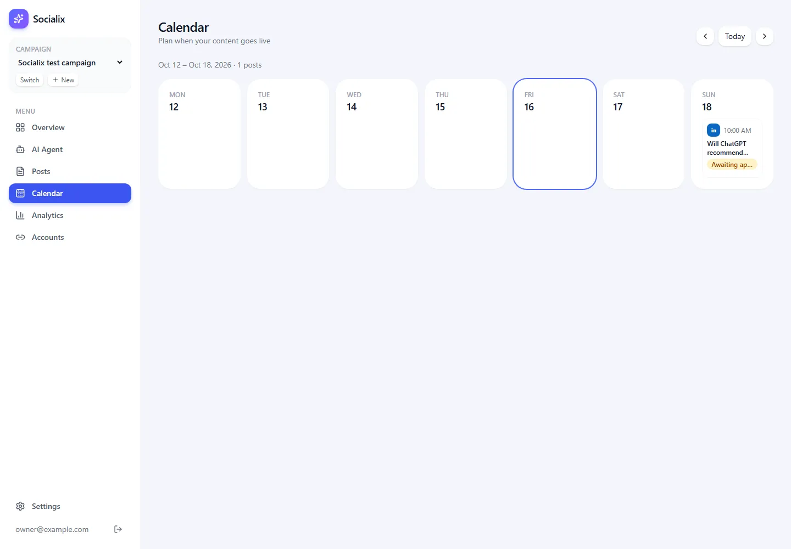

Calendar Page
A week view of scheduled posts with previous, next and today links.
▶ Watch this part (02:30:00)Once posts have times, the owner wants to see the week at a glance: what goes out on which day, and what still waits for approval. This step adds the Calendar page. Ours is deliberately small: one week, seven day columns, and links to move a week back or forward. It is a good example of a page that needs no JavaScript in the browser at all.
What the video does
The presenter's whiteboard (at 02:30:08) describes a calendar where you can "view, manage and reschedule all your posts", with weekly and monthly views, small previews, and drag and drop to change the date and time. His prompt to Claude Code starts: "Implement a modern Calendar page to display all scheduled posts from the database. Include Monthly and Weekly views".
- The result (02:30:55) has a week view and a month view. Published posts are green, upcoming ones grey.
- Clicking a post opens a details panel on the right with its status, time, platform, caption length and hashtags (02:31:19).
- A plus on a day opens "Create post" with that date already filled in (02:31:42).
- A time zone picker changes the times shown (02:32:05).
- Drag and drop: yes, the video's calendar has it. The plan says so, Claude Code's summary on screen explains that dragging uses the browser's built-in drag feature and does not work with touch, that a dragged post's Blotato schedule is cancelled and created again at the new time, and that published posts cannot be dragged. The week view shows the hint "Drag a post to another day or time to reschedule it". In the frames we checked, the presenter does not actually drag a post on camera.
He then commits on a branch called "15.Calendar" and opens a pull request for CodeRabbit (02:32:28).
The code: src/app/dashboard/calendar/page.tsx
New to server components? Why this page needs no browser JavaScript
In the Next.js App Router, a page is a
server component unless the file starts with
"use client". A server component runs on the server, can read the database directly, and sends finished
HTML to the browser. This page only shows data and uses ordinary links, so nothing has to run in the browser. A drag
and drop calendar would need a client component, because
dragging happens in the browser.
import Link from "next/link";
import { redirect } from "next/navigation";
import { and, eq, gte, lt } from "drizzle-orm";
import { ChevronLeft, ChevronRight } from "lucide-react";
import { db, schema } from "@/lib/db";
import { getCurrentCampaign } from "@/lib/campaign";
import { Card, PageHeader, PlatformBadge, StatusBadge } from "@/components/ui";
/** Week view of scheduled posts. ?week=N moves N weeks from the current one. */
export default async function CalendarPage({ searchParams }: { searchParams: Promise<{ week?: string }> }) {
const campaign = await getCurrentCampaign();
if (!campaign) redirect("/dashboard/campaigns/new");
const offset = Number((await searchParams).week ?? 0) || 0;
const start = new Date();
start.setHours(0, 0, 0, 0);
start.setDate(start.getDate() - ((start.getDay() + 6) % 7) + offset * 7); // Monday
const end = new Date(start);
end.setDate(end.getDate() + 7);
const posts = await db.query.posts.findMany({
where: and(eq(schema.posts.campaignId, campaign.id), gte(schema.posts.scheduledAt, start), lt(schema.posts.scheduledAt, end)),
});
const days = Array.from({ length: 7 }, (_, i) => {
const d = new Date(start);
d.setDate(d.getDate() + i);
return d;
});
const today = new Date().toDateString();
return (
<>
<PageHeader title="Calendar" subtitle="Plan when your content goes live">
<div className="flex items-center gap-2">
<Link href={`?week=${offset - 1}`} className="rounded-xl bg-white p-2 shadow-sm">
<ChevronLeft size={16} />
</Link>
<Link href="?week=0" className="rounded-xl bg-white px-3 py-2 text-sm shadow-sm">
Today
</Link>
<Link href={`?week=${offset + 1}`} className="rounded-xl bg-white p-2 shadow-sm">
<ChevronRight size={16} />
</Link>
</div>
</PageHeader>
<p className="mb-4 text-sm text-gray-500">
{days[0]!.toLocaleDateString("en-US", { month: "short", day: "numeric" })} – {days[6]!.toLocaleDateString("en-US", { month: "short", day: "numeric", year: "numeric" })} · {posts.length} posts
</p>
<div className="grid gap-3 md:grid-cols-7">
{days.map((d) => {
const dayPosts = posts.filter((p) => p.scheduledAt && p.scheduledAt.toDateString() === d.toDateString()).sort((a, b) => a.scheduledAt!.getTime() - b.scheduledAt!.getTime());
return (
<Card key={d.toISOString()} className={`min-h-48 p-3 ${d.toDateString() === today ? "ring-2 ring-brand-500" : ""}`}>
<p className="text-xs font-semibold uppercase text-gray-400">{d.toLocaleDateString("en-US", { weekday: "short" })}</p>
<p className="text-lg font-semibold">{d.getDate()}</p>
<div className="mt-2 flex flex-col gap-2">
{dayPosts.map((p) => (
<div key={p.id} className="rounded-xl border border-gray-100 p-2">
<div className="flex items-center gap-1.5">
<PlatformBadge platform={p.platform} size="sm" />
<span className="text-xs text-gray-500">{p.scheduledAt!.toLocaleTimeString("en-US", { hour: "numeric", minute: "2-digit" })}</span>
</div>
<p className="mt-1 line-clamp-2 text-xs font-medium">{p.title}</p>
<div className="mt-1">
<StatusBadge status={p.status} />
</div>
</div>
))}
</div>
</Card>
);
})}
</div>
</>
);
}Line by line
| Line(s) | Code | What it does & why |
|---|---|---|
| 1 | import Link from "next/link"; | Next.js links: they load the next page without a full browser reload, and still work as plain links. |
| 2 | import { redirect } from "next/navigation"; | Sends the owner to the "new campaign" page when there is no campaign yet. |
| 3 | import { and, eq, gte, lt } from "drizzle-orm"; | Query helpers: and combines
conditions, eq is "equals", gte "greater than or equal", lt "less than". |
| 4 | import { ChevronLeft, ChevronRight } from "lucide-react"; | The arrow icons for the previous and next buttons. |
| 5–7 | db, schema, getCurrentCampaign, UI pieces | The database, the campaign chosen in
the sidebar (step 7), and the shared Card, PageHeader,
PlatformBadge and StatusBadge (step 8). |
| 10 | CalendarPage({ searchParams }: { searchParams: Promise<{ week?: string }> }) | The page
receives the URL's query string. In Next.js 16 it is a Promise. week is optional and always a string,
because everything in a URL is text. |
| 11–12 | getCurrentCampaign() / redirect(...) | No campaign, no calendar. |
| 13 | Number((await searchParams).week ?? 0) || 0 | Turns ?week=2 into the number 2.
No parameter gives 0 (this week). Garbage like ?week=abc gives NaN, and || 0 turns
that into 0, so a bad link never breaks the page. |
| 15–16 | const start = new Date(); start.setHours(0, 0, 0, 0); | Today at midnight. |
| 17 | start.setDate(start.getDate() - ((start.getDay() + 6) % 7) + offset * 7); | Moves back to this
week's Monday, then forward or back by whole weeks. getDay() counts Sunday as 0, so
(getDay() + 6) % 7 is "days since Monday": 0 on Monday, 4 on Friday, 6 on Sunday. setDate handles
month boundaries for us (day 0 becomes the last day of the previous month). |
| 18–19 | const end = new Date(start); end.setDate(end.getDate() + 7); | Next Monday at midnight: the end of the week, not included. |
| 21–23 | where: and(eq(campaignId), gte(scheduledAt, start), lt(scheduledAt, end)) | Only this
campaign's posts scheduled from Monday 00:00 up to, but not including, next Monday 00:00. Drafts with no time have a
null scheduledAt and never match, so they do not appear. |
| 24–28 | Array.from({ length: 7 }, ...) | Builds the seven dates of the week, Monday first. |
| 29 | const today = new Date().toDateString(); | Today as text like "Fri Oct 16 2026", to compare dates without the time. |
| 33–45 | <PageHeader ...> and three <Link>s | Previous links to
?week=offset-1, Today to ?week=0, next to ?week=offset+1. Because the week lives in the
URL, a reload or a shared link shows the same week. |
| 46–48 | summary line | The first and last day, formatted in US English ("Oct 12 – Oct 18, 2026"), and how many posts the week has. |
| 49 | className="grid gap-3 md:grid-cols-7" | One column on phones; seven columns from the
md width (768 px) up. |
| 51 | posts.filter(...).sort(...) | The posts of one day, earliest first. The ! after
scheduledAt tells TypeScript "this is not null here", which the filter guarantees. |
| 53 | ring-2 ring-brand-500 | Draws a coloured ring around today's card. |
| 54–55 | weekday and day number | "MON" in small grey capitals, then "12". |
| 57–67 | one small card per post | Platform badge, time ("10:00 AM"), title cut after two lines
(line-clamp-2), and the status badge, so "Awaiting approval" posts stand out. |
gte for the start and lt for the end. A "half-open" range
means every moment belongs to exactly one week. (The two posts are illustrative.)
week number. The URL is the state, so
back, forward and reload all work.Try it
- Make sure at least one post has a time: ask the Scheduler Agent to schedule a draft, or create one on the Posts page with "Publish at" filled in.
- Open Calendar in the sidebar (
/dashboard/calendar). - Press the right arrow: the address becomes
?week=1. Press Today to come back.
/dashboard/calendar?week=1 loads (check "calendar moves to next
week").- "My draft is missing." Drafts without a time are not on the calendar. Schedule them first.
- Times look shifted. Times are stored in UTC and shown in the server's local time zone. Our app runs on the owner's PC, so that is their time zone; on a cloud server set to UTC, a 14:00 UTC post shows as 2:00 PM.
- Trying to drag a post. Our calendar has no drag and drop; use the Scheduler Agent or the Posts page.
- Expecting the week to start on Sunday. Line 17 always starts on Monday. To start on Sunday you
would subtract
getDay()instead, and change the day order everywhere.
- The video's calendar has week and month views, a details panel, create-on-a-day, a time zone picker and drag and drop rescheduling through Blotato.
- Ours is one read-only week, built in a 76-line server component with no browser JavaScript.
(getDay() + 6) % 7finds Monday;?week=Nmoves N weeks; the query uses a half-open rangegtestart,ltend.- Times are set by the Scheduler Agent (for drafts) or on the Posts page; a queued post must be cancelled first.